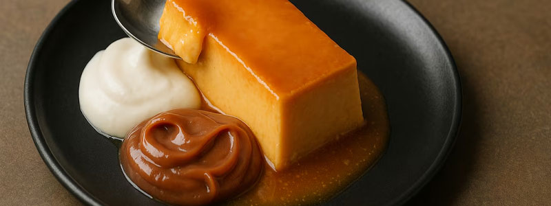
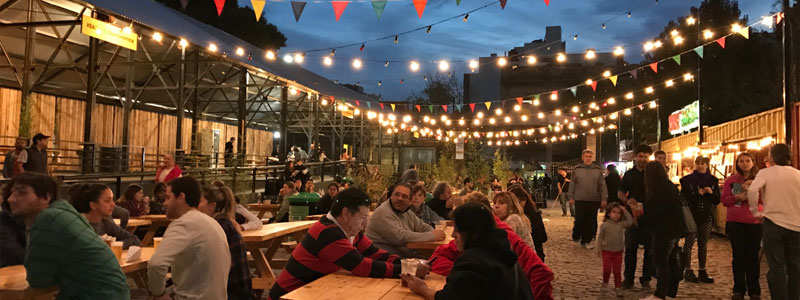

¿Cuál es el sabor de la gastronomia porteña?
En Buenos Aires vas a encontrar platos típicos y comida de todo el mundo.

En Buenos Aires vas a encontrar platos típicos y comida de todo el mundo.

En este buscador vas a poder filtrar por nombre, tipo de establecimiento y barrio.

Conocé los patios y mercados en donde podés disfrutar de la gastronomía de la ciudad.